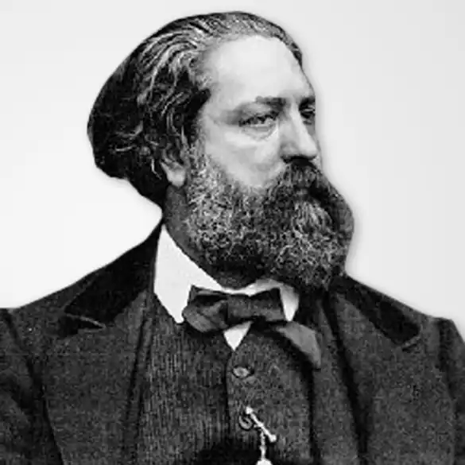
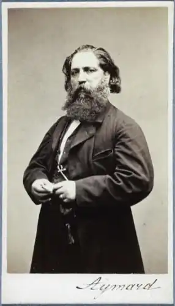

Густав Емар (фр. Gustave Aimard; справжнє ім'я – Олівер Глуа, фр. Olivier Gloux; 13 вересня 1818, Париж — 20 червня 1883, там само) — французький письменник, справжнє ім'я Олівер Глуа, автор численних пригодницьких романів
Олівер Глуа народився у вересні 1818 року в Парижі. Став юнаком, Олівер залишив Францію. Він поступив юнгою на корабель торгового флоту, що прямував до Америки, і десять років провів в плаваннях і сухопутних подорожах різними країнами.
Довгі роки він подорожував по Північній і Південній Америці, жив декілька років серед індійців, вивчаючи побут різних племен. Повернувшись у віці тридцяти років до Франції, він взяв участь у революції 1848 року. Після встановлення режиму Наполеона III Емар знову вирушає до Америки, де здійснює декілька небезпечних експедицій в малодосліджених районах. У 1858—1870 роках вийшло в світ більше тридцяти романів Емара, що мали галасливий успіх у публіки, що читала. Героями безлічі романів Емара були індійці – то благородні і великодушні, то жорстокі й хитрі, але завжди мужні і горді воїни. Мексика і Аргентина, Нова Англія, Арканзас і Техас, Канада і Вогняна земля – географія його творів охоплює увесь материк. У основі багатьох романів лежать справжні історичні події, діють історичні особи, з якими стикається і будує свої взаємини романтичний герой. На справді, численні американські романи Емара в сукупності являють енциклопедією Америки, сповнену яскравих і екзотичних подробиць життя Нового Світу. Колоніальна екзотика, романтика пошуків, відкриттів і завоювань – мабуть, це достатньо, щоб привернути до творів Емара інтерес і юних і дорослих шанувальників пригодницької літератури.